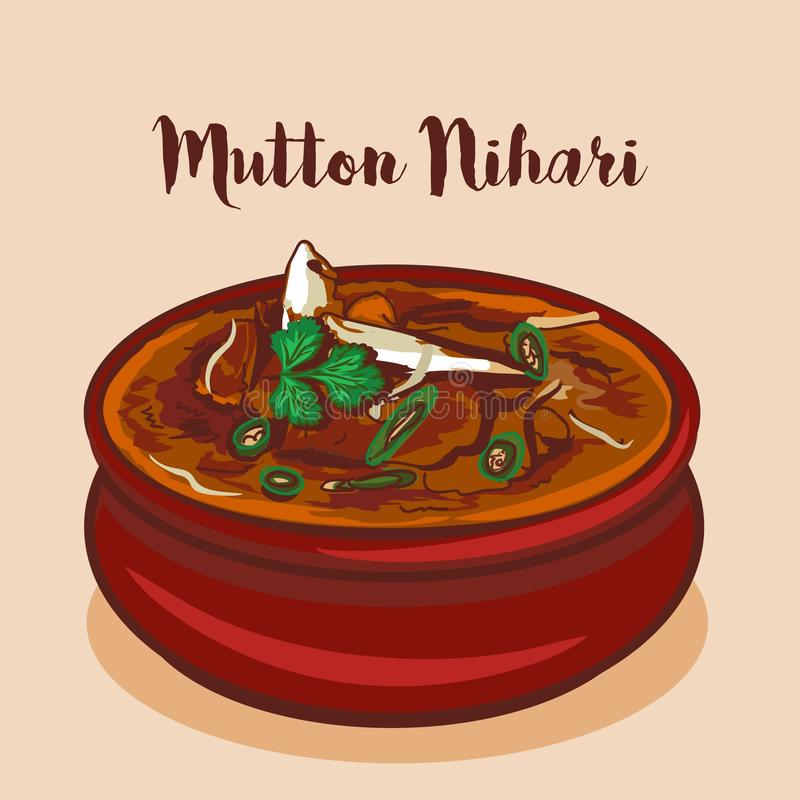

Nihari

Description
Nihari is a stew from the Indian subcontinent consisting of slow-cooked meat, mainly shank meat of beef or lamb and mutton,
goat meat and chicken, along with bone marrow.
Nihari developed with the overall cuisine of Muslims of the Indian subcontinent.
People cooked it for one whole night and they ate it in the early morning at sunrise.
The dish is known for its spiciness and taste. It was originally more of a delicacy with myriad
variations on spiciness and texture.
Ingredients
- 1 kg mutton, preferably shank portion (cut into 8-10 pieces)
- 4 tbsp Ghee/Clarified butter
- 2 medium onions, finely sliced
- 1 tsp ginger paste
- 1 tsp garlic paste
- 2 tsp coriander powder
- 1/2 tsp turmeric powder
- 3 tbsp wheat flour
- 3 tbsp nihari masala
Recipe instructions
- Heat Ghee (you can use oil as well but ghee makes it tastier) in a deep bottom stock pot.
Once the ghee is hot, add the sliced onions and fry till they start to turn brown.
- Add mutton pieces, ginger paste, garlic paste, coriander powder, turmeric powder and salt.
Mix well to coat the mutton in ghee and spices. Sauté for 5 mins.
- Add the nihari masala and 8 cups of water. Mix well, cover and cook on very low heat for about 4 hours until the meat is tender.
Keep checking in between. The way to know that the meat is cooked is when it breaks easily with a wooden spoon.
- Dissolve wheat flour in half cup of water such that there are no lumps.
Slowly add it to the gravy. Stir to mix it well in the gravy and let it simmer
for another 10-15 mins till the gravy thickens.
- Sprinkle some lime juice and garnish with ginger strips and fresh coriander leaves. Serve hot.
Return to Main Page